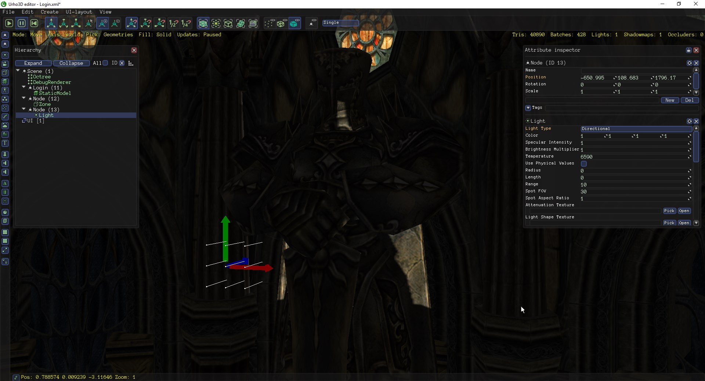
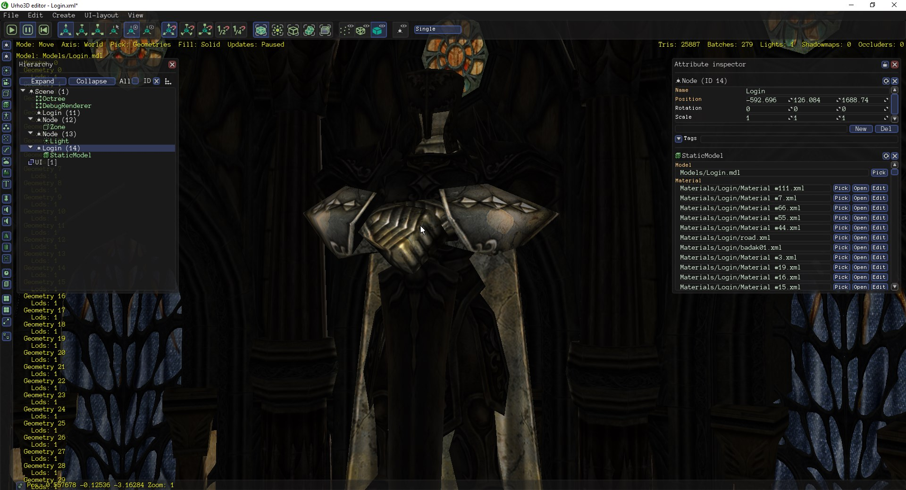
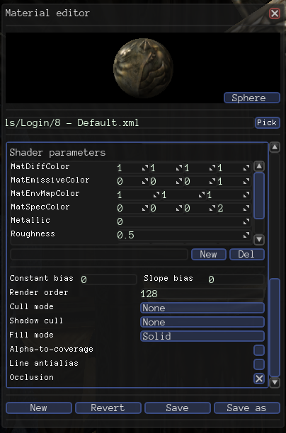

Hey, Im importing some FBX models on Urho editor to test somethings, and I noted that cast shadows of directional light, just works on hidden faces (as Im using Cull Mode none, the face appears on editor, otherwise, wouldnt show). Check the pictures:

This way, to test, I flipped the others faces to test if cast shadows would works:
(more one time, if not have cull mode = none, the face would be hidden on urho editor)
https://puu.sh/zpd4q/af98e8f472.gif
And… cast shadows works

Material Settings:

Some notes:
All materials its using the technique DiffAlphaMask.xml, and all uses cullmode=none, I’ve already tried to use Diff.xml and uses cullmode normally, but nothing works.
Anyone knows what can be?
Thanks.